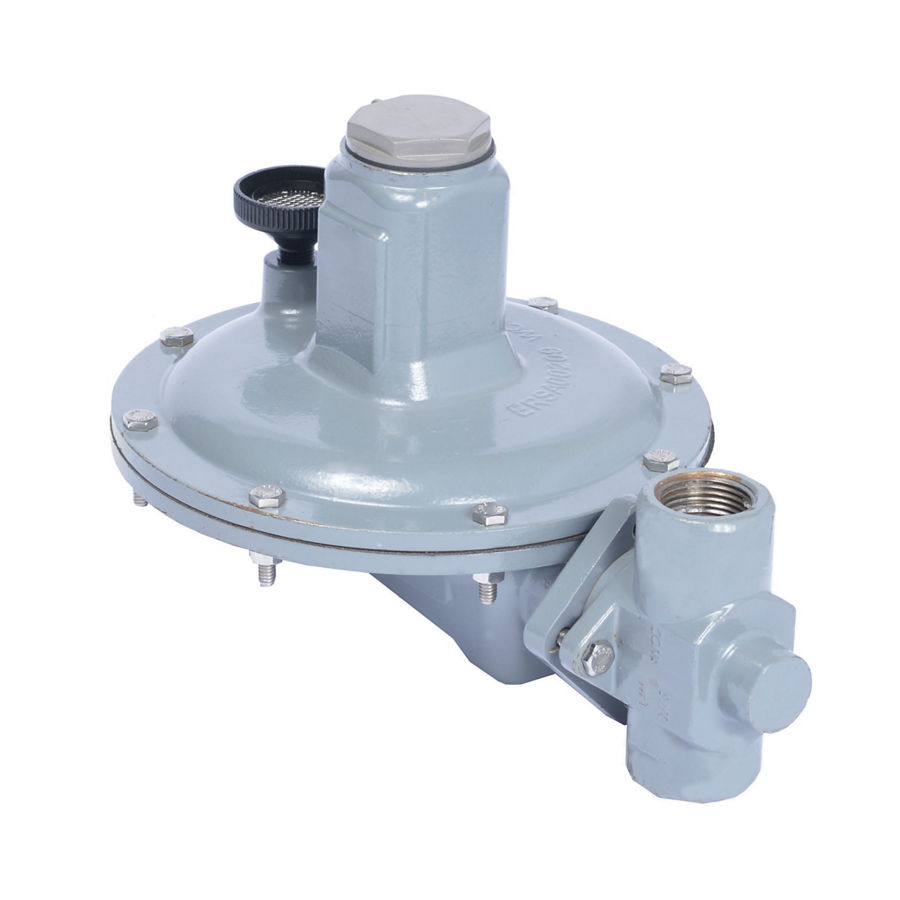
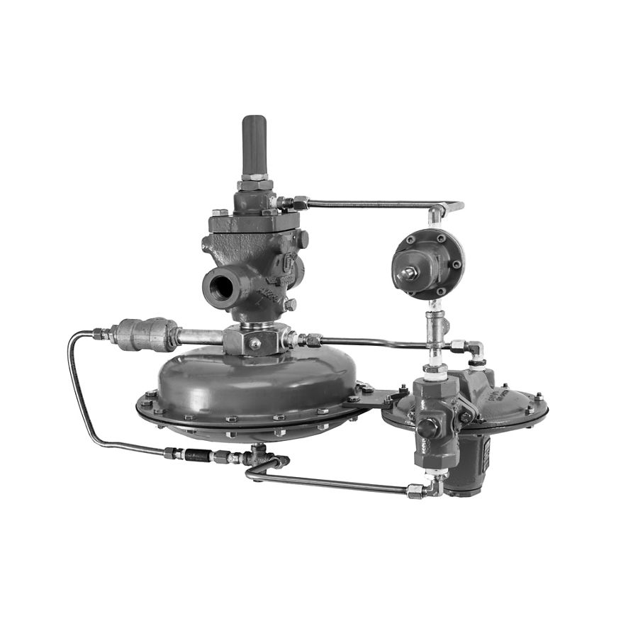
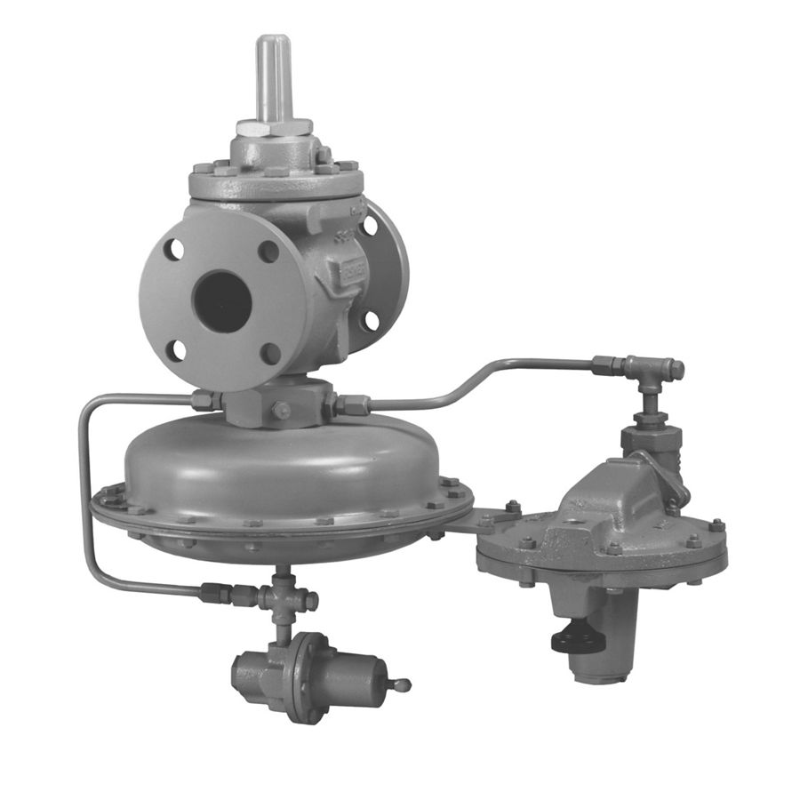
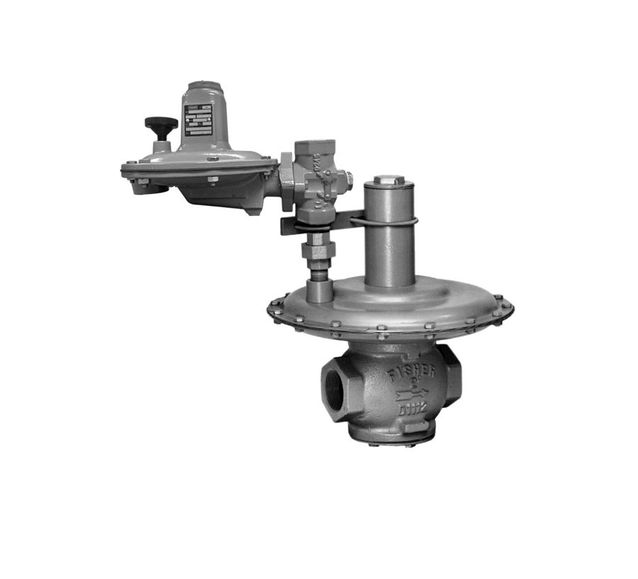
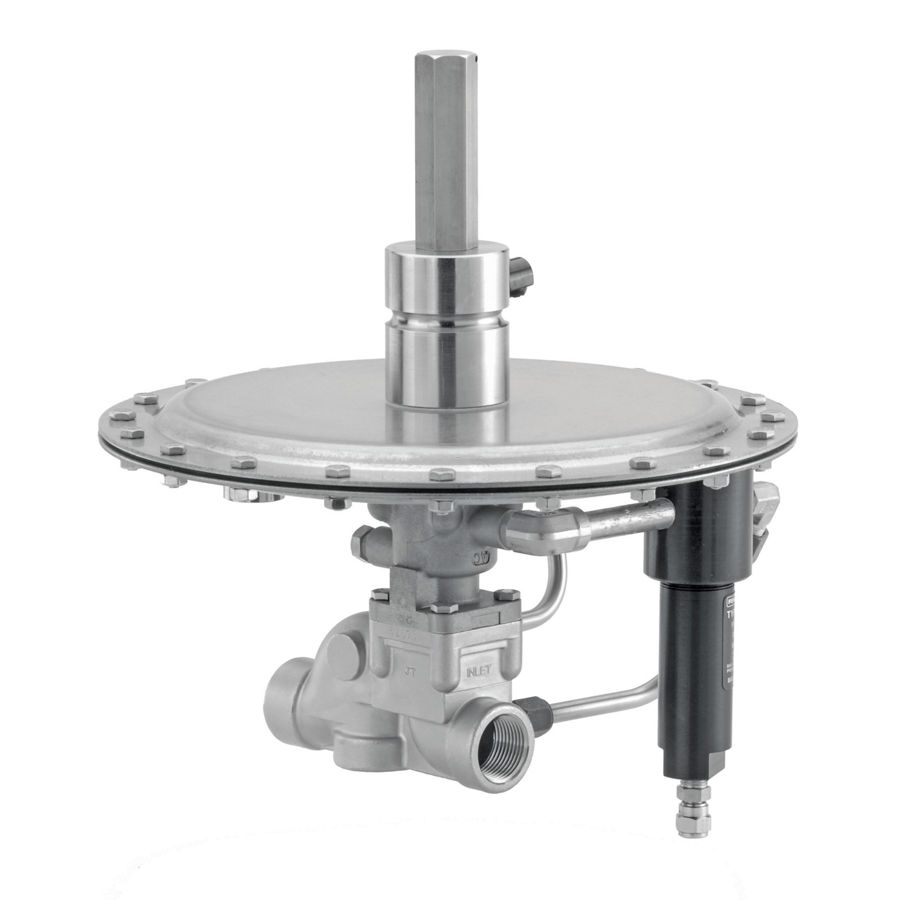
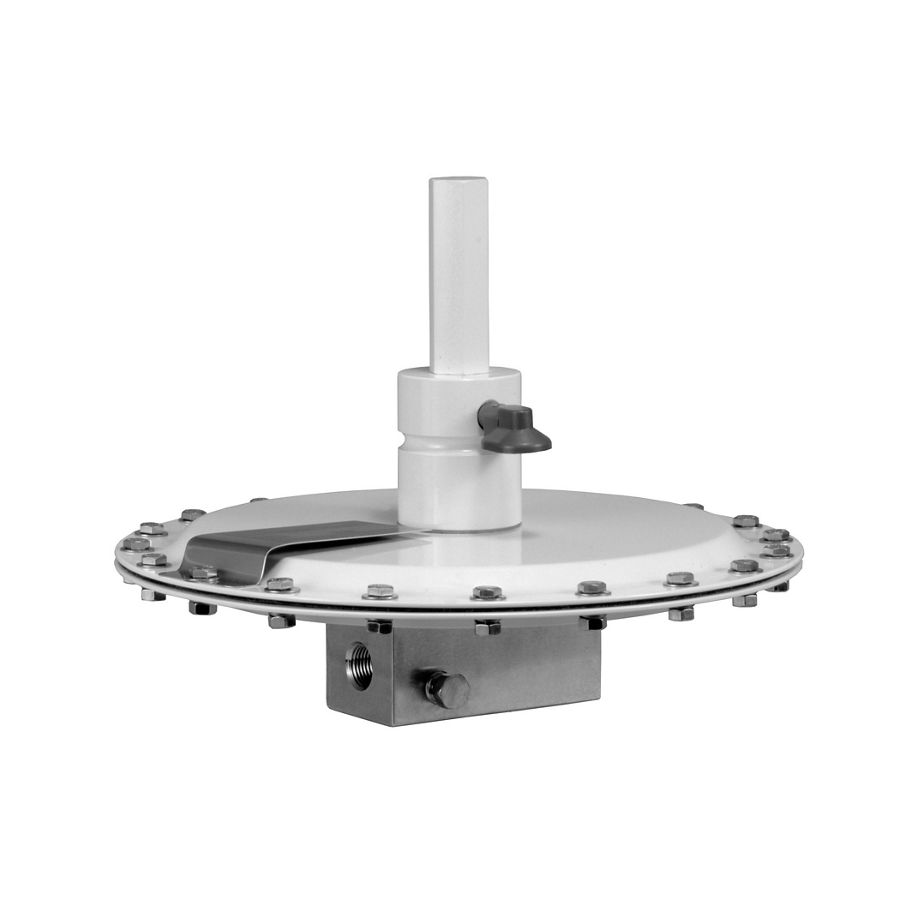
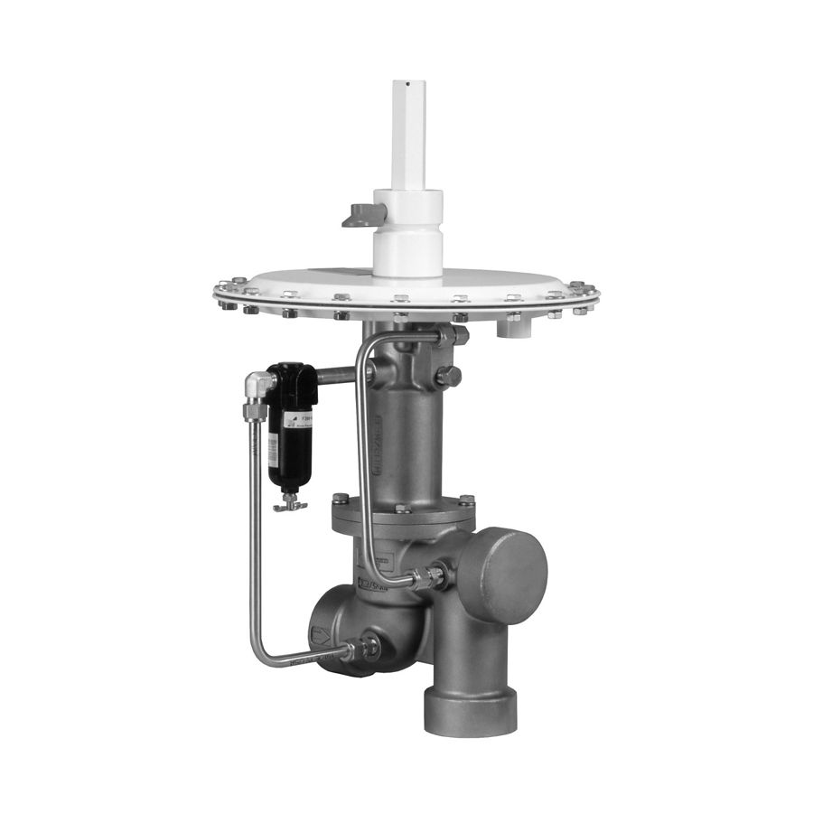
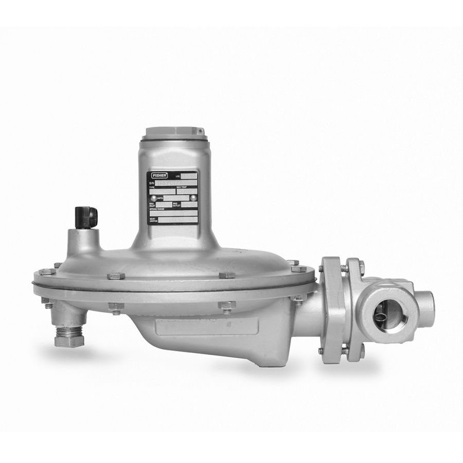
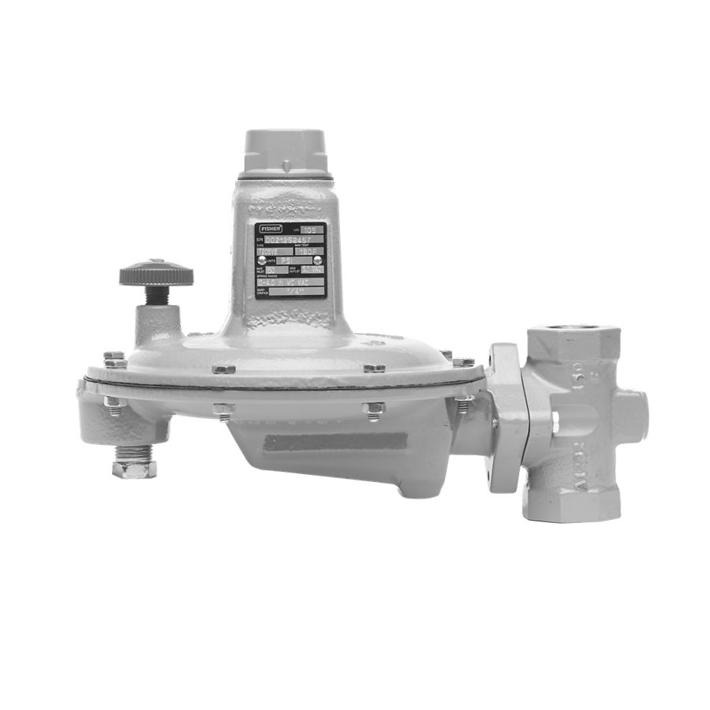
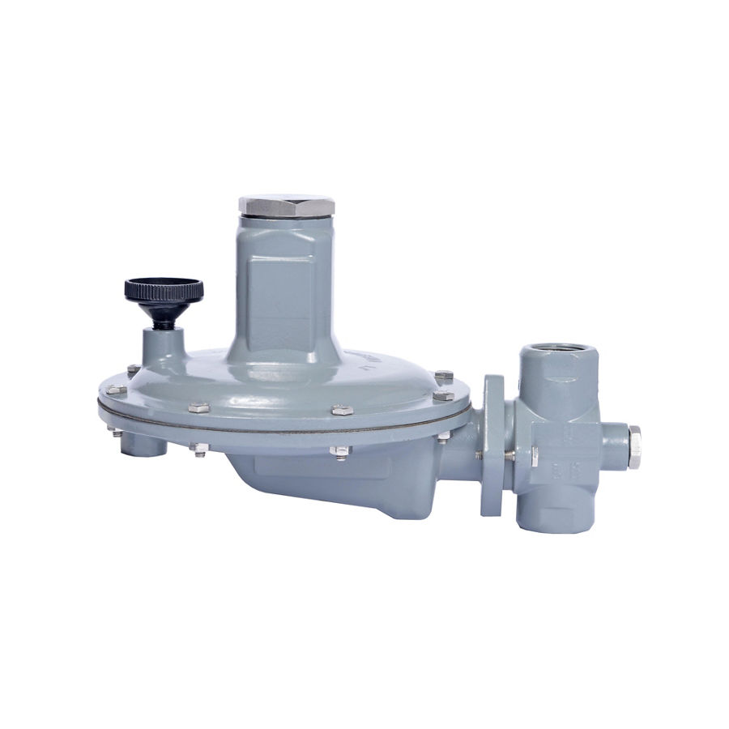

Fisher T205 Series Tank Blanketing Regulators
Regulator bao trùm bồn bằng N₂; setpoint 2,5 mbar–0,48 bar; phản hồi nhanh; bản FDA/USP Class VI.
Van bao trùm bồn Fisher T205, T208, ACE95, 1190, 1290 và vent Y602 – giữ lớp khí trơ ổn định trên bồn chứa, thu hồi hơi.
Fast Group cung cấp bao trùm bồn (tank blanketing) Fisher chính hãng, đủ CO/CQ. Mỗi model có trang riêng với mô tả, biến thể, tài liệu kỹ thuật và hướng dẫn gửi RFQ.

Regulator bao trùm bồn bằng N₂; setpoint 2,5 mbar–0,48 bar; phản hồi nhanh; bản FDA/USP Class VI.

Cụm lỗ thông hơi cho regulator/actuator; chống mưa, côn trùng; bộ ổn định chống dao động.

Van bao trùm bồn Fisher 1190. Type 1190 low-pressure gas blanketing valve is a pilot-operated, pressure reducing valve with a supply…

Van bao trùm bồn Fisher 1290. Type 1290 vapor recovery regulator is a self-contained, pilot-operated regulator system used for vapor…

Van bao trùm bồn Fisher 66R. 66R Series regulators adjust to blanket‑gas pressure changes and control gas flow from the vessel.

Van bao trùm bồn Fisher ACE95. Type ACE95 is a pilot‑operated vapor saver for low‑pressure blanketing. It uses a stainless actuator and…

Van bao trùm bồn Fisher ACE95JR. Type ACE95Jr is a direct‑operated blanketing valve. Its stainless body and large actuator improve…

Van bao trùm bồn Fisher ACE95SR. Type ACE95Sr valves are balanced, pilot‑operated units for accurate blanketing control. They cut emissions…

Van bao trùm bồn Fisher T205B. T205B is a balanced tank blanketing regulator with a large diaphragm for accurate low‑pressure control.

Van bao trùm bồn Fisher T205VB. T205VB Series vacuum breakers provide precise control for low‑pressure service where vacuum rise must be…

Van bao trùm bồn Fisher T208. T208 Series are direct‑operated vapor recovery regulators. They vent excess tank pressure and can act as…
Trụ sở TP. Hồ Chí Minh và văn phòng Vũng Tàu đều tiếp nhận RFQ, tư vấn cấu hình và bàn giao bộ chứng từ CO/CQ; bảo hành chính hãng 12 tháng kể từ ngày giao hàng. Yêu cầu gửi trong giờ làm việc được phản hồi trong cùng ngày; giao hàng toàn quốc.
150/41 Nguyễn Cư Trinh, P. Cầu Ông Lãnh
51 Lê Văn Lộc, P. Vũng Tàu